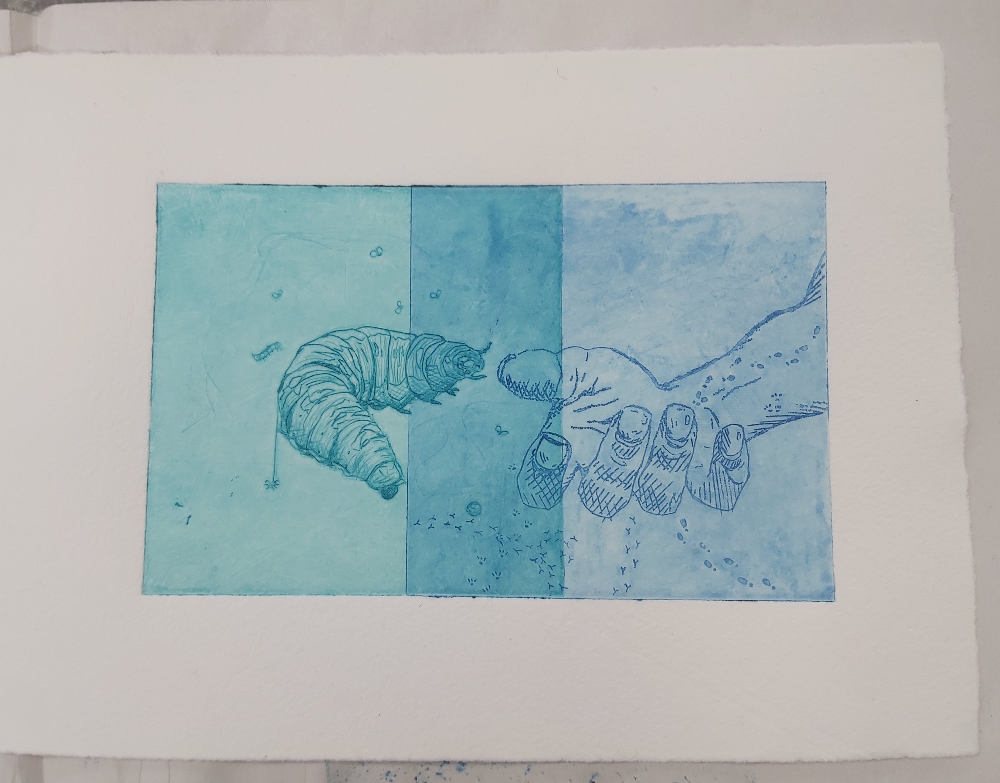
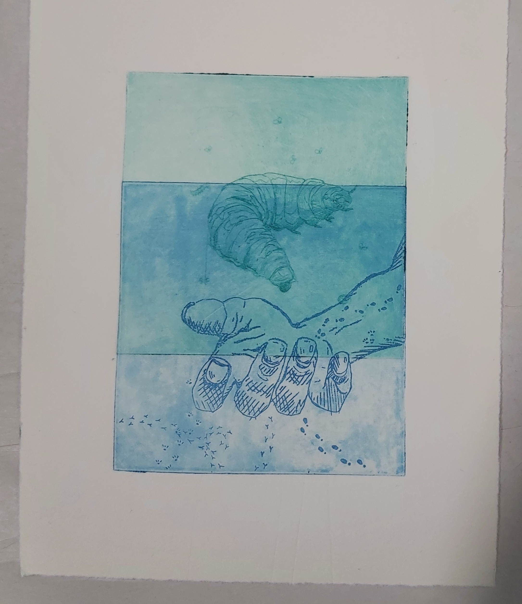
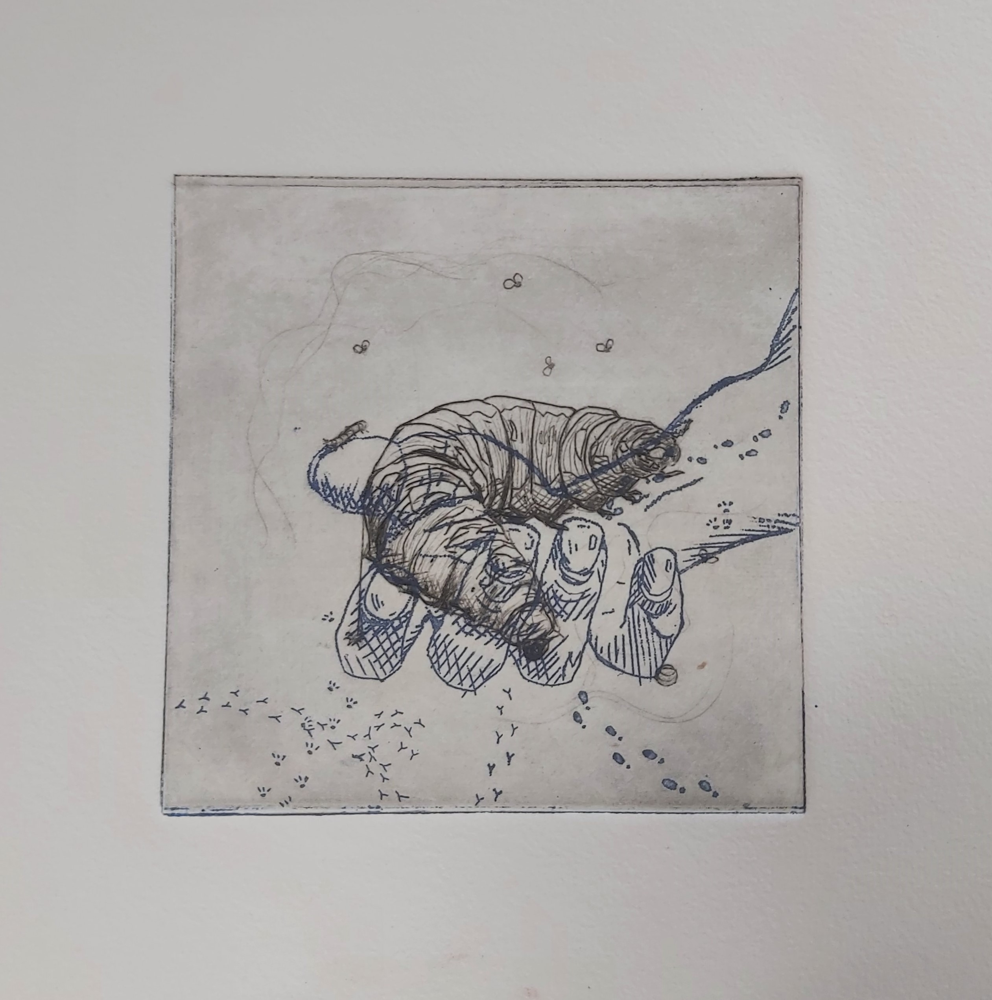
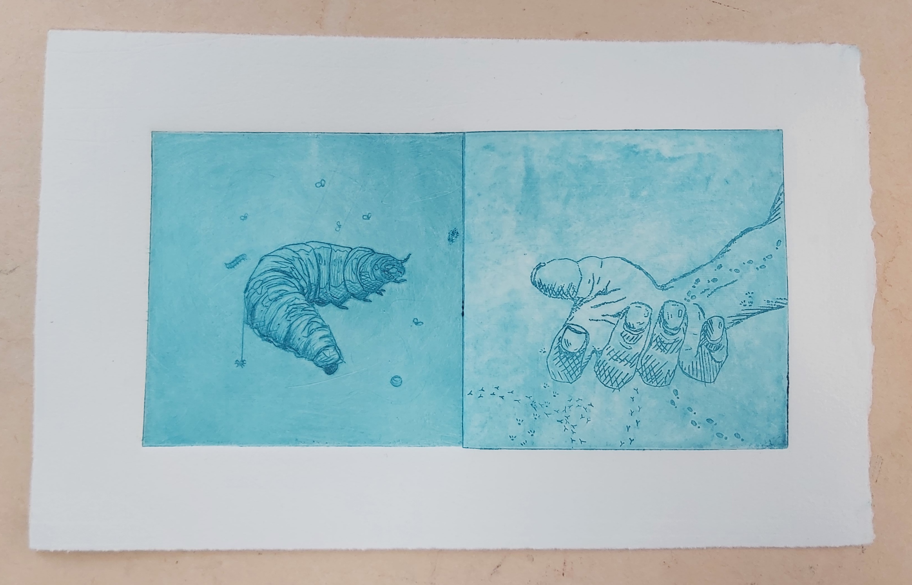
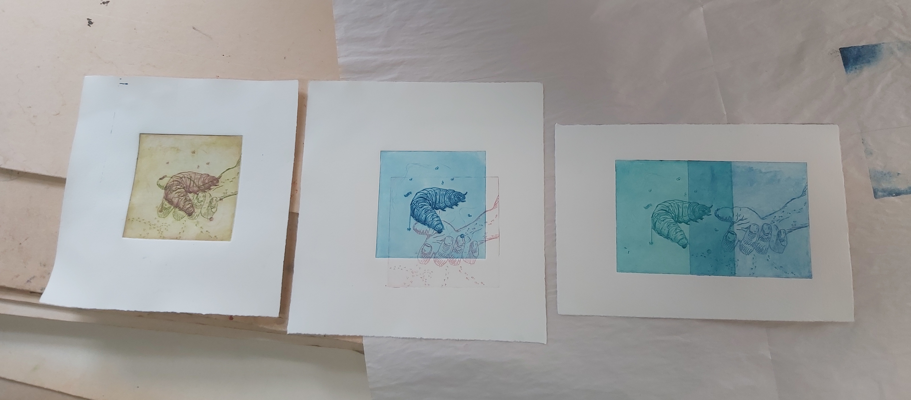

×

Kuoleman tie
Itsearviointi:
Tämän työn idea oli matkalainen, toukka, joka on matkallaan kuolleen ruumiksen
luo, mätänemisprosessin edistämiseksi. Jalanjäljet tuovat oikukkaan tulkinnan vakavaan aiheeseen
ja korostavat matkan aihetta. Inspiroiduin Harry Potterin Kelmien kartasta.
Mielestäni idea oli todella hyvä, mutta toteutus olisi voinut olla parempi.
En oikein miettinyt miltä kuivaneula ja etsaus laatat näyttäisivät päällekäin vedostettuna,
katsoin niitä vain yksilöinä. Olisin esimerkiksi voinut jättää kädestä ne linjat pois, minne
toukka tulisi vedostuksessa päälle. Jos nyt vedostaa kummatkin laatat päällekäin,
lopputulos näyttää ainakin minusta liian sekavalta. Osittain päällekkyys toimii mielestäni parhaiten.



